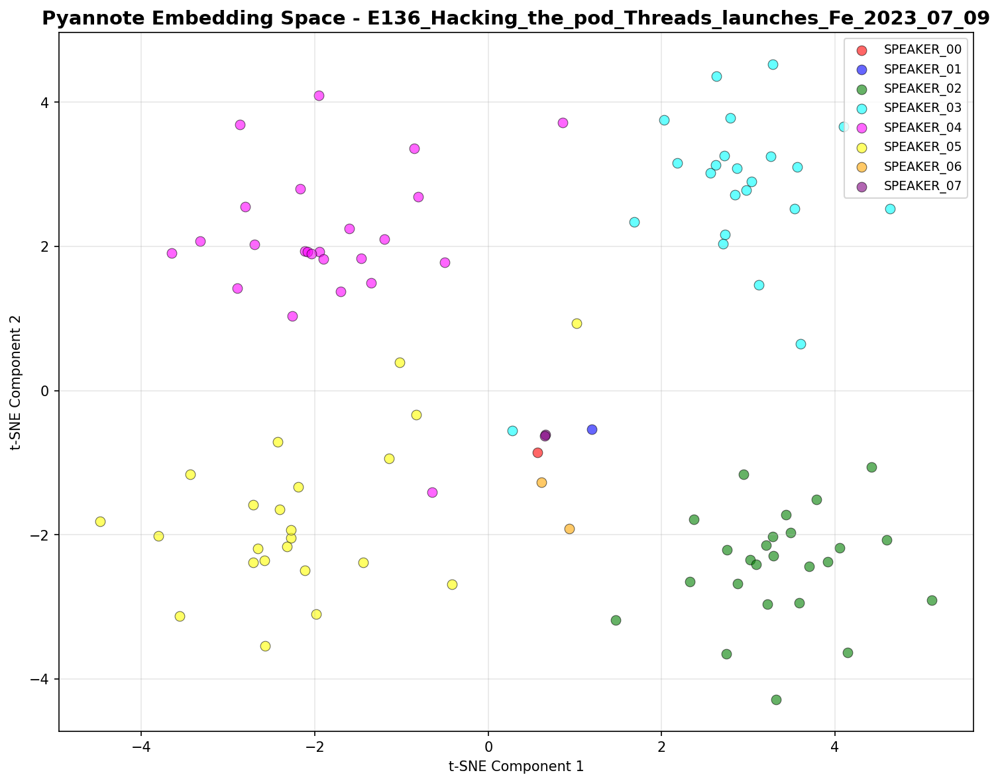
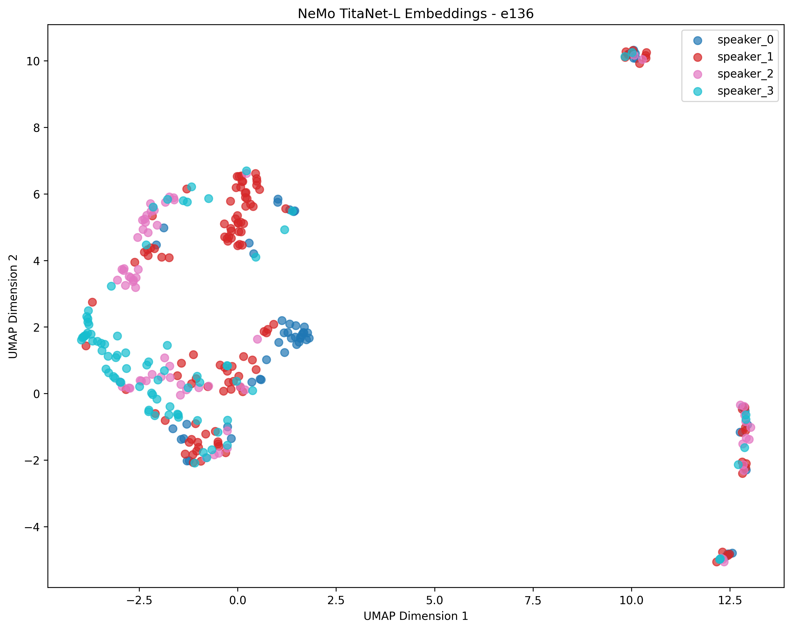
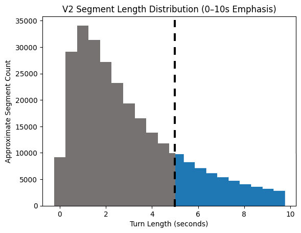
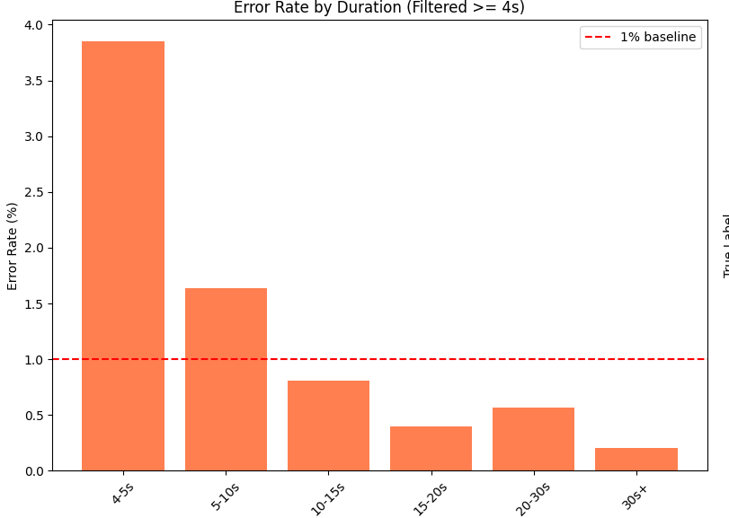
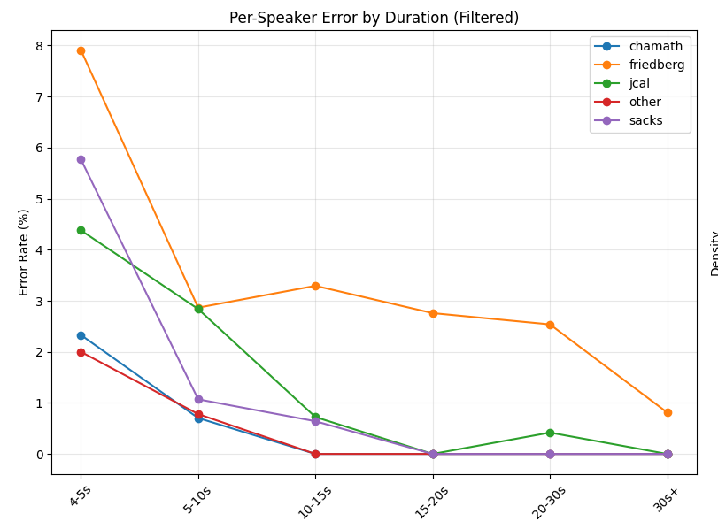

Speaker Classification Policy Evolution
V1 — Host-Only Classifier
WhisperX segmentation + Pyannote embeddings.
~9,000 host clips from 44 episodes. Guest audio excluded.
Structural flaw: no guest hard-negatives → risk of confident mislabeling.
An incidental “unknown” bucket absorbed ambiguity.
V1 worked in isolation. It was structurally fragile.
V2 — Guest-Aware Scaling
Same segmentation + embedding stack.
Added Clownfish speaker verification and large-scale guest extraction.
Architecture unchanged. Data discipline changed.
V2 Dataset & Results
61,682 clips
198.46 hours
4 hosts + 87 guests
Host vs Guest ≈ 99%
5-class (hosts + other) ≈ 96–97%
V3 — Embedding Upgrade (NeMo / TitaNet)
Replaced Pyannote embeddings with NVIDIA NeMo TitaNet.
Segmentation logic unchanged. Classification architecture unchanged.
V2 fixed the dataset.
V3 corrected the representation layer.
V3 Full Training & Evaluation Metrics
Embeddings: 91,410
Train / Val / Test: 64,131 / 13,062 / 14,217
Test Accuracy: 96.53%
Host Identification Accuracy: 95.98%
Binary Host vs Other: 98.52%
End-to-End Combined Accuracy: 91.19%
Primary Confusion: JCal → Chamath (196)
Embedding Geometry — Episode 136
Pyannote Embeddings

NeMo / TitaNet Embeddings

V4 — Duration Constraint & Production Reality
White papers warn sub-5s audio degrades embedding stability.
My 387-episode dataset reflected this.
Community consensus: discard short-turn audio.
I refused to drop ~50% of the data.
V4 retrained on >5s audio and restricted classification to ≥5s segments.
Embedding geometry improved.
Production exposed confident cluster-level failures.
High accuracy ≠ production reliability.
Architectural pivot:
Human-In-The-Loop mapping of NeMo speaker_ID → timestamped audio.
V4 Key Findings
>5s training constraint
Improved embedding compactness
Cluster-level confident failures
Shift to HITL verification
Segment Distribution

Production Errors

